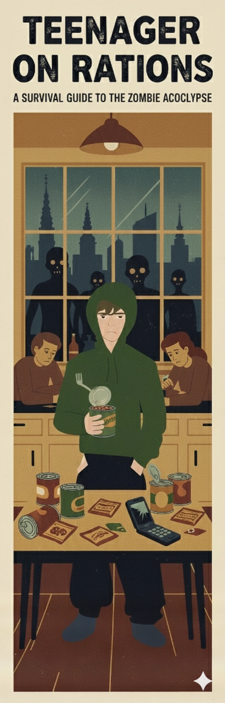
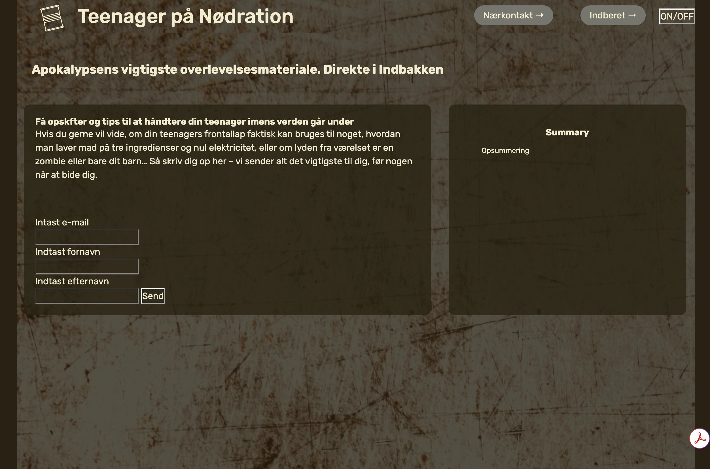
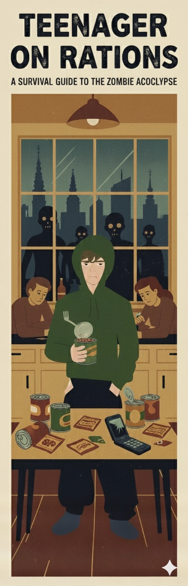
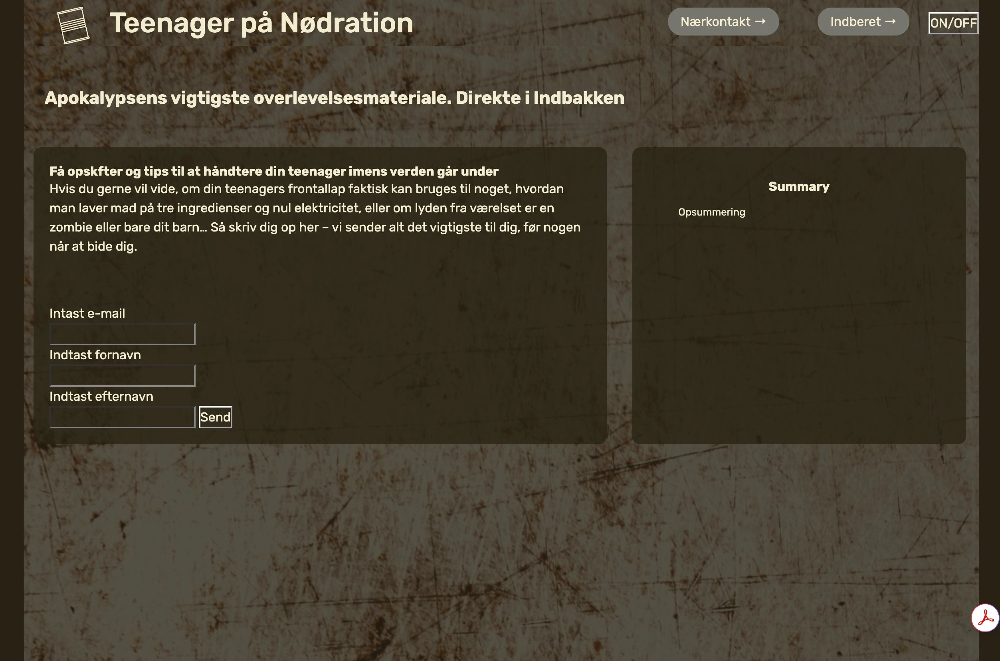

I efteråret arbejde vi med ”emergency site”, hvor SVG blev introduceret som et animationselement ved brug af CSS og JavaScript. Der blev udført bruger feedback test på Paper prototype, der var med at højne konceptet og brugervenlighed. inforgrafik skulle være et element på sitet sammen med og UI-elementer, som knapper, forms. Kommunikation omkring projektets start og udførelse gav en del udfordring og det blev desværre noget der fulgte temaet. Udfordringer blev kun større med javaScrip UI-elementer. Konceptet og design af SVG’en blev det bærende element i opgaven.
Mit koncept blev til ”Teenanger på Nødration” er en humoristisk og praktisk overlevelsesguide til forældre, der står midt i både zombieapokalypse og pubertet. Her lærer du at skelne mellem zombiestønnen udenfor og teenagermumlen inde på værelset, så du ikke forveksler dem i kampens hede. Guiden giver indblik i de uventede styrker og kendte udfordringer ved en ufærdig frontallap, hvor impulsivitet og kreativitet kan være både en hjælp og en hindring. Du får også inspiration til at gøre nødrationer som bønner, tørre nudler og kiks mere spiselige for en kræsen og sulten teenager. Målet er at hjælpe dig med at overleve kaos med humor og ro.

 


